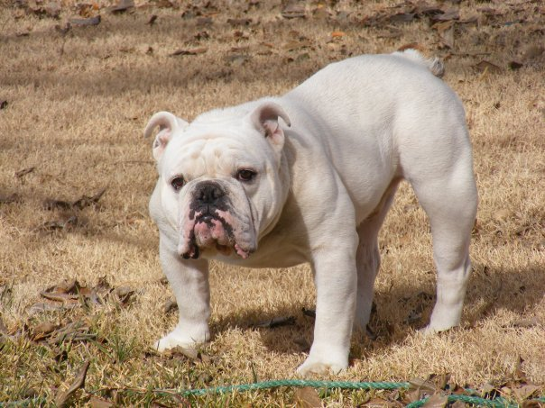

Images of Dog's Breed

White bulldog

German-Shepherd

The Bulldog is a British breed of dog of mastiff type. It may also be known as the English Bulldog or British Bulldog. It is of medium size, a muscular, hefty dog with a wrinkled face and a distinctive pushed-in nose. It is commonly kept as a companion dog; in 2013 it was in twelfth place on a list of the breeds most frequently registered worldwide.
The Bulldog has a longstanding association with British culture; the BBC wrote: "to many the Bulldog is a national icon, symbolising pluck and determination". During the Second World War, the Prime Minister Winston Churchill was likened to a Bulldog for his defiance of Nazi Germany. The Bulldog Club (In England) was formed in 1878, and the Bulldog Club of America was formed in 1890.Read More
The German Shepherd or Alsatian is a German breed of working dog of medium to large size. The breed was developed by Max von Stephanitz using various traditional German herding dogs from 1899.
It was originally bred as a herding dog, for herding sheep. It has since been used in many other types of work, including disability assistance, search-and-rescue, police work and warfare. It is commonly kept as a companion dog, and according to the Fédération Cynologique Internationale had the second-highest number of annual registrations in 2013.Read More